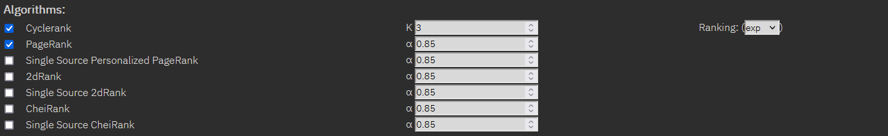
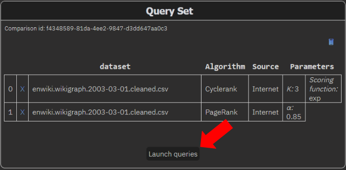

The demo’s main goal is to allow users to play with different datasets, comparing the main state-of-the-art algorithms for computing personalized relevance scores. To perform a comparison, go under the “Try it out” section:
Under the Create Queries section go at the bottom and choose the algorithms to analyze. We suggest comparing PageRank with Cyclerank, as that offers the most interesting results.
Check the algorithms’ boxes and choose their parameters, or leave them as-is to use the default ones.
Then, select a dataset on which to run the comparison.
For a quick analysis, we suggest “wikilinkgraph en 2003-03-01”, as WikiLink networks tend to have a high number of nodes and edges, and the computation of the PageRank requires time.
Finally, insert a source node to run the algorithms on. We suggest nodes such as “Internet”, "Fake news" or "IEEE", but please note that the query node must exist in the dataset precisely as it is spelled, and must have existed at the snapshot's date of creation.
Then launch the queries by pressing on the “Add to compare” button:
and then the “Launch queries” button under the Query Set section.
It is possible to analyze an algorithm’s performance over multiple datasets and to appreciate a dataset’s evolution in time or differences in language.
To do so, select a single algorithm and the first dataset to run it on. Once added to the Query Set section, you can add another dataset comparison by selecting the same algorithm again, and then selecting the new dataset you want to analyze alongside the ones you have already added.